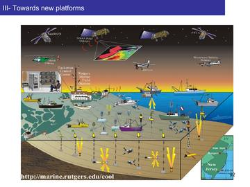
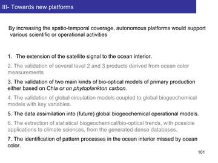
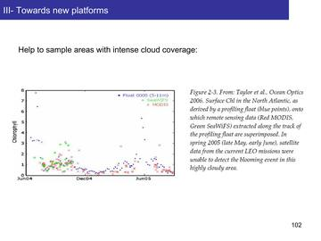
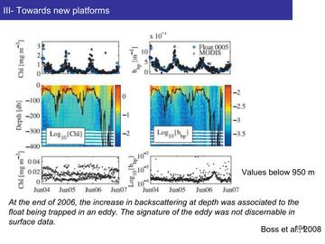
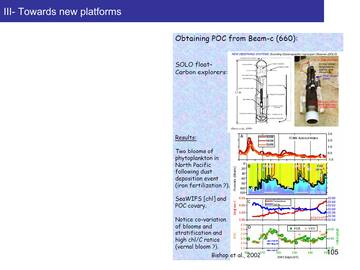
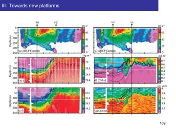
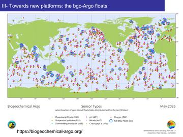

Home › H · New platforms
Ships give precise but sparse data, satellites see only the surface layer of clear skies. Profiling floats, gliders, BGC-Argo and even animals extend the observations in depth and time, and carry bio-optical sensors that measure the IOPs of modules D–F.
Why new platforms
“The ocean is critically undersampled” (Munk 2000, slide 85). Slide 4 shows the extreme contrast: ≈ ½ million Secchi/Chl points in 100 years versus about ½ million SeaWiFS observations every ≈ 30 s, each with spatial bias and gaps. Slide 2 places every process and platform on a space–time diagram.
Floats, gliders and what they carry
Profiling floats sink to about 2000 m, drift and rise measuring (slide 94); bio-optical versions add a radiometer (412, 490, 532 nm), a 660 nm transmissometer, Chl and CDOM fluorometers and a 555 nm backscattering meter (slide 97). Gliders carry backscatter, fluorescence, Ed and Lu at four wavelengths, CTD and oxygen (slide 98). Slide 101 lists seven contributions to science and operations (see the quiz).
Argo and BGC-Argo today
Slide 113: 4153 Argo floats on 30 June 2025. Slide 115 (BGC-Argo, May 2025): 788 operational floats; oxygen 782, suspended particles 551, chlorophyll a 551, pH 451, nitrate 447, downwelling irradiance 166, full BGC 77 (read from the legend). The two numbers 4153 and 788 come from different maps/dates and are not combined into a percentage.
Worked example, quick Q&A and memory hooks
77 of 788 operational BGC floats carry the full set (10 %); oxygen is on 99 % and the bbp sensor on 70 %.
Quick Q&A
A: They see the surface layer, only through clear skies (slide 102).
A: Vertical profiles of Chl, b_bp, c_p and irradiance all year (slides 97, 103).
Memory hooks
- Satellites: wide and shallow. Floats: narrow and deep.Vệ tinh: rộng, nông. Phao: hẹp, sâu.
Lecture slides for this module (Loisel, Marine Optics)
18 slides of the lecture “Marine Optics” (H. Loisel, LOG). Numbers refer to the slide number in the file. Click a page to enlarge; browse all pages.
















Exam checklist — points you must mention
- Quote Munk (2000) and the slide-4 contrast.
- List float and glider sensors (slides 97–98).
- List the seven contributions (slide 101).
- Give one example of a float or glider result (slides 102–112).
- Give the Argo and BGC-Argo counts and their dates.
- Đại dương bị lấy mẫu thiếu; phao và glider thêm chiều sâu và hoạt động dưới mây.
- Phao sinh-quang học: bức xạ kế, truyền qua 660 nm, huỳnh quang Chl/CDOM, tán xạ ngược 555 nm.
- Slide 101: bảy đóng góp của nền tảng tự hành.
Lecture slides (11 slides; use ← → keys or the buttons)
Quick self-check (10 of 17 questions)
Open the full bank: 17 multiple-choice + 2 essay questions →